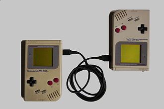
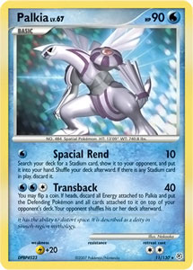
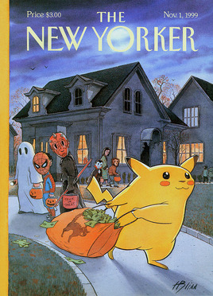
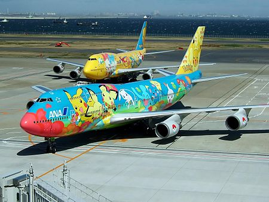

Lorem, ipsum.
Lorem, ipsum.
Pokémon[a][b] is a Japanese media franchise consisting of video games, animated series and films, a trading card game, and other related media. The franchise takes place in a shared universe in which humans co-exist with creatures known as Pokémon, a large variety of species endowed with special powers. The franchise's target audience is children aged 5 to 12,[2] but it is known to attract people of all ages.[I] The franchise originated as a pair of role-playing games developed by Game Freak, from an original concept by its founder, Satoshi Tajiri. Released on the Game Boy on February 27, 1996, the games became sleeper hits and were followed by manga series, a trading card game, and anime series and films. From 1998 to 2000, Pokémon was exported to the rest of the world, creating an unprecedented global phenomenon dubbed "Pokémania". By 2002, the craze had ended, after which Pokémon became a fixture in popular culture, with new products being released to this day. In the summer of 2016, the franchise spawned a second craze with the release of Pokémon Go, an augmented reality game developed by Niantic. Pokémon has since been estimated to be the world's highest-grossing media franchise and one of the best-selling video game franchises. Pokémon has an uncommon ownership structure.[11] Unlike most IPs, which are owned by one company, Pokémon is jointly owned by three: Nintendo, Game Freak, and Creatures.[1] Game Freak develops the core series role-playing games, which are published by Nintendo exclusively for their consoles, while Creatures manages the trading card game and related merchandise, occasionally developing spin-off titles. The three companies established The Pokémon Company (TPC) in 1998 to manage the Pokémon property within Asia. The Pokémon anime series and films are co-owned by Shogakukan. Since 2009, The Pokémon Company International (TPCi), a subsidiary of TPC, has managed the franchise in all regions outside of Asia.[12][13]
1989–1995: Development of Red & Green
Tajiri started to think of what was to become Pokémon while completing Quinty, and before he officially founded Game Freak. Around this time, Nintendo announced the upcoming release of the Game Boy, a handheld console that would revolutionize the gaming industry. Tajiri learned that the device would have a link port, and with the corresponding Game Link Cable, two Game Boys could be linked together.[68] Sometime later, Tajiri remembered an incident while playing Dragon Quest II (1987), a role-playing game (RPG) for the Famicom (NES). The game features randomly appearing items of varying rarity, including an extremely rare item called Mysterious Hat.[e] Tajiri did not encounter any, while Ken Sugimori, who was also playing the game, encountered two. Upon recalling this experience, Tajiri realized that the cable now made it possible to transfer things from one cartridge to another.[IV] He noted that, until then, the Game Link Cable was only used for competing, but not for something else.[73] Combining this inspiration with his memories of catching insects and other small species, Tajiri's idea would eventually evolve into a virtual recreation of his boyhood experiences,[74] and an attempt to "regain the world that he had lost".[75] He would later state that the game represents "the story of a boy's summer day".[76]
Trading card game
The Pokémon Trading Card Game (PTCG) was one of the first collectable card games (CCGs) in Japan. It was inspired by Magic: The Gathering.[145][146][147] In the card game, the players use a 60-card deck featuring Basic and evolved Pokémon, Energy cards, and Trainer cards to help them knock out the opponent's Pokémon, drawing prize cards and winning the game.[457] Cards are classified into various levels of rarity, ranging from Common to Rare Holofoil with a holographic illustration. Rare cards, including limited edition, exclusive cards, and older cards, are highly valued among collectors due to their scarcity.[458][459] According to the official website of The Pokémon Company, 64.8 billion cards have been produced as of March 2024.[456]
Reaction to Pokémania (1999–2000)
In 1999 and 2000, Pokémon was an unprecedented, ubiquitous fad in the Western world. Time magazine described it as "a multimedia and interactive barrage like no other before it".[25] The franchise, primarily aimed at children, elicited mixed responses from parents and teachers, some of them critical. Yano (2004) even claimed that the reactions at one point constituted a moral panic.[469] The bulk of the criticism on Pokémon was directed at the trading cards,[470] in particular the booster packs, sealed packages of 11[f] randomly inserted cards that were sold separately from the main sets. The cards are of varying scarcity, the most valuable being the "holofoil cards" (also called "holographic" or "foil cards"), in which the illustrations of the Pokémon have a shiny overlay effect. The rare cards can only be found in booster packs, and the rarest ones are very infrequently included. Tobin (2004) notes that rarity in this case is "artificially created", and "effectively a form of gambling" in which children need to repeatedly purchase booster packs to get more rare cards.[471] Brougère (2004) described a cynicism among adults that corporations could apparently, "out of thin air", ascribe value to cards which they saw as valueless, thereby "deceiving vulnerable young consumers and garnering excessive profits".[470] As the franchise's popularity grew, children began taking their Pokémon cards to school for trading and playing. Soon, the cards were alleged to be "disrupting learning, poisoning playground friendships and causing such distraction that some children forget their homework, tune out in class and even miss school buses as they scramble to acquire one more card".[472] The cards were "turning the playground into a black market",[473] with card swaps sometimes inciting conflicts. Certain children engaged in "aggressive trading",[474] tricking other (often younger) kids into unfair deals, forcing teachers to arbitrate.[XI] Some parents expressed their concerns about the craze, but feared that their children would be ostracized if they were to deny them Pokémon products.[474][479][480] In the US, the Pokémon cards ended up "almost universally banned" from school grounds.[481] Similar bans occurred in Canada,[482][483] Australia,[484] New Zealand,[485] and European countries.[474][486][487] In September 1999, US-based law firm Milberg filed a class-action lawsuit against Nintendo of America, Wizards of the Coast, and 4Kids. The suit claimed that the booster packs constitute a form of lottery and promote gambling in kids.[488][489] Susan Estrich noted that similar lawsuits had been filed against trading-card makers in the US, without success.[490] The Pokémon card suit is not known to have gone to court, and is believed to have been settled.[j] The Pokémon anime series was criticized by some as "cheap Japanese animation"[492] that is "violent"[26][493][494] and has "little educational value".[495] Michelle Orecklin of Time dismissed the TV series as "less a cartoon than a half-hour exercise in Pokémon product placement".[496] Allison (2006) wrote that even those within Pokémon's US marketing team agreed that the anime's visuals were "not especially sophisticated" compared to Disney cartoons.[492] Pokémon: The First Movie premiered in the United States on November 12, 1999, and in European countries in February 2000. While a huge box-office success, the film was received negatively by several Western film critics.[497][498] The Guardian decried it as a "contemptuously cheap animated cash-in on the monster kids' craze".[499] The American adult animated series South Park satirized Pokémon in the episode "Chinpokomon", aired on November 3, 1999. In the episode, the titular media franchise is portrayed as a low-quality line of products that is part of an evil plan by the Japanese government to invade the US. South Park co-creator Matt Stone commented that, at the time, Pokémon was "scary huge".[500] Kohler (2004) wrote that Pokémon was considered "ruthlessly commercial", and that it "program[med] children to be consumers of anything and everything Pokémon".[501] CNN quoted child psychiatrist John Lochridge as worrying that "Pokémon's creators and marketers deliberately set out to create a fantasy world so compelling that children would quickly become obsessed". He believed that kids were being "brainwashed", and said: "I have had parents tell me that they cannot get their kids to do anything except Pokémon, so this stuff seems to really capture their minds, in a way".[5] These concerns were countered by psychologist William Damon, who told Newsweek that obsessing is in fact a normal part of a child's neurological development. It should concern parents only when the obsession gets dangerous or excessive.[502] An op-ed in the New Zealander newspaper The Dominion Post claimed that the anti-Pokémon sentiment was particularly American: "The backlash, which seems largely confined to the United States, may be no more than the sound of the world's leading cultural imperialist gagging on a taste of its own medicine".[503] As Pokémania built, Western media started reporting on several crimes associated with Pokémon. These included violence[484][504] (including two reported stabbings),[505][506] burglaries,[507][508] robberies[504][509] (some at knifepoint),[510][511] and shoplifting.[512][513] Almost all these incidents were connected to the Pokémon cards, and the individuals involved were almost always underage. In the US, the incidents peaked in November 1999.[321] In England, Pokémon-related delinquency reached a head in April 2000.[510][514] High prices on the grey market were a motive behind some of the crimes, "posing a great temptation for older kids and bullies to take advantage of weaker children".[515] At specialty shops and online auctions, a rare Pokémon card could be bought and sold for $50 or more (c. $91 in 2023).[516] Aside from the negative reactions, many media also cited alleged beneficial effects of Pokémon.[517][518][519] It was noted that the video games and the cards require children to read, memorize, calculate, and plan out a strategy.[4][162][520] Both encourage socialization, and trading Pokémon requires negotiating skills.[5][15][21] Stephanie Strom wrote in The New York Times that the Pokémon anime taught children "traditional Japanese values -- responsibility, empathy, cooperation, obedience, respect for elders, humility".[521] Anne Allison interviewed various American parents during Pokémania. She found that while most of them were "utterly mystified" about Pokémon, few were overly worried about it, instead meeting the craze with "befuddled acceptance". Allison also notes that the Columbine High School massacre occurred during Pokémania, causing violent television, music, and games to be scrutinized. Compared to these media, she notes, Pokémon is in fact rather tame.[522] In contrast, Pokémon received far less criticism in its native country of Japan. Yano (2004) attributes this to cultural differences, which includes: 1) greater acceptance of exuberant consumerism – to buy is to be a good citizen; 2) less focus on media influence – instead, Japan's educational system, bullying, and dysfunctional families are more often the target of attention; 3) less separation between child- and adulthood – what is suitable for adults is not necessarily considered unsuitable for kids; 4) Pokémon being permeated with kawaisa (cuteness), a hallmark of Japanese culture; 5) Japan's core religions, Buddhism and Shinto, are less moralizing in nature.[523] However, Oliver Burkeman wrote in The Guardian that the Pokémon cards were also banned from some Japanese schools.[28]
Legacy and influences
After World War II, Japan experienced a period of unprecedented growth and became well-known in the Western world for its consumer products, such as radios (e.g. Panasonic, Toshiba), cars (e.g. Toyota, Mitsubishi), and Sony's Walkman.[524] From 1991 onwards, its economy stagnated, causing the country to lose its status as an economic superpower. However, during the 1990s and 2000s, Japan re-emerged as a source of 'cool' cultural goods, embraced by a growing international audience interested in Japanese culture.[XII] Nintendo, Sega, and Sony launched several popular video game consoles and franchises.[242][529][530] In terms of children's properties, the success of Mighty Morphin Power Rangers changed perceptions on the viability of such Japanese imports in the West.[531][532][533] The Tamagotchi fad (1997–98),[534] centered around a portable digital pet device, was said to have "paved the way for Pokémon".[241] Anne Allison (2006) wrote that, before the 1990s, Japan figured little in the face of the worldwide hegemony of Euro-American cultural industries, in particular that of the US. "Hollywood has been hostile to imports", she wrote, "and foreignness has largely been, and been seen as, an impediment to mass popularization in the United States".[535] The surprise success of Pokémon was "an undeniable breakthrough in the homeland of Disney" that "changed preexisting assumptions about the US marketplace at the same time that it was constantly resisted for deviating from them".[536] Pokémon was a welcomed boon to Japan's faltering economy,[211] and positively influenced the country's soft power.[537][538] Kamo (2000) interviewed various American children and found that kids who thought Pokémon was cool, were more likely to believe that Japan was a cool nation.[539] Allison (2003) gave a similar finding: all the children she interviewed knew where Pokémon originated, and "many said that, as a result of Pokémon and other 'cool' Japanese goods, they had developed an interest in Japan. A number said that they now wanted to study Japanese and travel there one day".[540] Kohler (2004) wrote: "Japanese are proud of Pokémon, the most successful export of Japanese popular culture ever".[541] Although, Iwabuchi (2004) questioned to what extent Pokémon really is 'Japanese', and to what extent it is simply a good property with universal appeal. He noted that Japanese nationalist commentators celebrated Pokémon's global success and retrospectively attributed this to its "Japanese cultural power",[542] while ignoring the localization of Pokémon overseas,[543] as well as decades of increasing cooperation and cultural exchange between countries (globalization).[544] In the 20th century, anime found niche popularity in North America and Europe in series (Astro Boy, Kimba the White Lion, Speed Racer) and films (Akira, Ghost in the Shell).[XIII] The Pokémon TV series and films marked a breakthrough for anime, contributing to its growing worldwide success at the turn of the 21st century.[XIV] For some children, Pokémon was their introduction to 'Japanimation',[549][550] serving as a "gateway" to other anime, manga, and Japanese culture in general.[551][552] Pokémon: The First Movie became one of the most successful Japanese animated films in history.[320] After Princess Mononoke, Pokémon: The First Movie became the second anime film to open at mainstream cinemas in the West, as opposed to the usual art house venues.[553] Pioneering anime importer John Ledford noted that Pokémon underscored the commercial potential of anime, thus making it interesting from a business perspective.[554] In the field of video games, the main Pokémon series became the standard within the monster-taming game genre, a subtype of RPGs. While not the first to use this concept, the Pokémon games became so synonymous with it that later titles involving catching and training monsters, of any genre, were inevitably compared to Pokémon.[555][556][557] Examples of this include Dragon Warrior Monsters (1998),[XV] Robopon Sun and Star (1998),[563][564] Spectrobes (2007),[XVI] Invizimals (2009),[XVII] Monster Crown (2021),[XVIII] and Palworld (2024).[XIX] The success of Pokémon encouraged companies to look for other popular Japanese properties that might be localized for Western markets.[249][585][586] The importing of at least three similar franchises were confirmed by business executives to have been (partly) inspired by Pokémon: Yu-Gi-Oh!,[587] Digimon,[588] and Monster Rancher.[589] The import of Cardcaptor Sakura (as Cardcaptors) might also have been prompted by Pokémon.[590][591]
"When we started this project in Japan, one of the first things I was told was that this kind of thing would never appeal to American audiences. They said, 'Because the characters are in a very Japanese style, you cannot sell them to Americans'. So from the very beginning, I never thought there would be an English version. Now, it's just as popular in the United States [as in Japan], and I realized that we shouldn't always believe the opinions of conservative marketers." Shigeru Miyamoto, August 1999[237]
Table lorem
| lorem 1 | Lorem, ipsum. | Lorem, ipsum. |
| lorem 2 | Lorem, ipsum. | Lorem, ipsum. |
| lorem 3 | Lorem, ipsum. | Lorem, ipsum. |